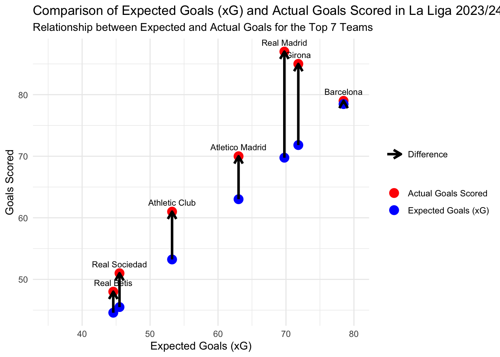
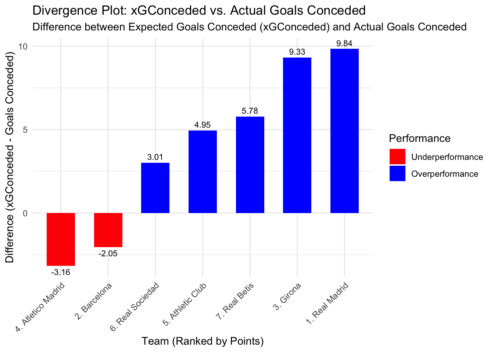
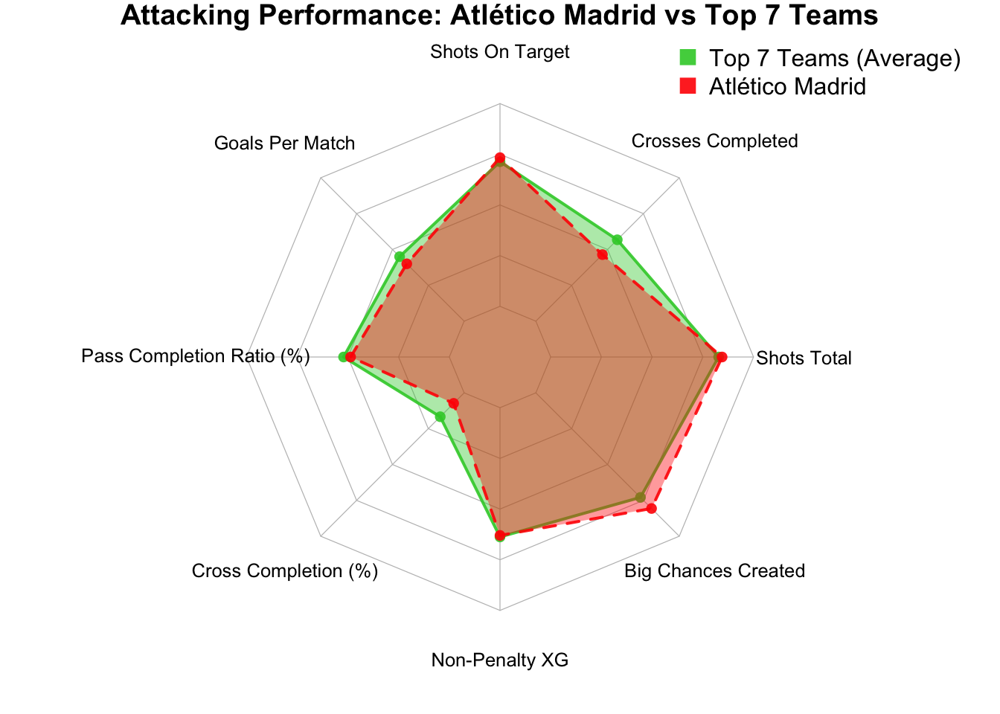

Atletico Madrid season 23/24 team performance analysis
Atletico Madrid season 23/24 team performance analysis
In the past thirteen years of La Liga, Atlético Madrid has been regarded as a strong title contender. Despite the dominance of Spain’s two traditional big clubs, Barcelona and Real Madrid, Los Colchoneros managed to break their monopoly and win the league title twice, they were seen this way because of their recent history in the league. The reason is that Atlético has been the only team to consistently challenge Real Madrid and Barcelona over the last decade. Since the 2014/15 season, Atlético Madrid’s league standings have never dropped below third place. However, in the 2023/24 season, their performance plummeted drastically, finishing fourth in the league.
In this report, I will analyze player and team data to answer one question: What caused Atlético Madrid’s poor performance last season? To uncover useful insights, I will explore various attributes across different dimensions. For team performance metrics, I will examine data on accurate passes, crosses, goals conceded, interceptions, and other relevant statistics that reflect overall team effectiveness. Player performance metrics will focus on individual contributions, including expected goals (xG), assists, clearances, fouls committed, and tackles won. Additionally, match-specific insights will provide detailed information on goals scored, scoring attempts, possession percentages, and cards issued per match. By combining these metrics, I aim to identify the factors behind Atlético Madrid’s performance last season.
The dataset used in this report, “La Liga 2023/24: Team & Player Stats,” is hosted on Kaggle, a platform for sharing open data. It was collected and organized by user Whispering Kahuna using data sourced from FotMob, a proprietary platform for football statistics. All copyrights for the original data belong to FotMob, and this dataset is a restricted collection of publicly viewable data and does not claim ownership of FotMob’s data.
Background Information
Before we uncover the truth behind Atlético Madrid’s data from last season, we must first understand their tactics. In the 2023/24 season, Atlético Madrid mostly adopted a 3-5-2 formation, featuring three defenders and five midfielders: two wing-backs, two versatile midfielders, and a defensive number 6. In attack, they utilized two forwards to pose a constant threat to the opposition’s defense. As the figure shown above.
The 3-5-2 formation places five players in midfield, giving Atlético Madrid a numerical advantage in central areas during midfield battles. This setup allows them to flexibly apply pressure on opponents, with some midfielders pushing forward to press and create threats, while others drop back to assist with organization and support. Under heavy defensive pressure, the two wing-backs can drop back into position, forming a five-man defensive line.
The two wing-backs are undoubtedly key players, crucial to the team’s success on both ends of the pitch. Offensively, they push high up to provide width, stretch the opposition’s defense, create opportunities for crosses, and combine with midfielders and forwards. They also participate in build-up play, forming diverse attacking combinations with central players. Defensively, wing-backs quickly drop back to form a five-man backline, adding stability and covering wide spaces that opponents might exploit. Their ability to transition seamlessly between attack and defense is the cornerstone of the team’s tactical balance.
If a wing-back underperforms, the attacking threat in their area diminishes, and poor positioning can be exploited by opponents. Given the demands of the role, wing-backs face strict physical requirements, needing to tirelessly shuttle up and down the flanks. When possession is lost, they must swiftly track back to defend; when their team holds the ball, they push forward to provide width. Atlético Madrid utilizes wing-backs differently depending on the flank: on the right, they often employ a natural-footed wing-back to stay wide and deliver crosses into the box, linking up with midfielders or forwards making runs. On the left, they tend to use wing-back that plays like an inverted winger in attack, such as Yannick Carrasco in the 2022/23 season, they cut inside to threaten the goal directly, and stay wide when the team has the ball. During attacks, the left wing-back often advances to a position akin to a left winger, while defensively, they drop back into the five-man defensive line. This aggressive tactical approach places exceptionally high demands on players’ tactical awareness, technical ability, and fitness.
Compared to the common four-defender formations like 4-4-2, the 3-5-2 offers better solutions against teams playing with two forwards. In a 4-defender setup, the two center-backs are often left in 1v1 situations against the opposition’s forwards, whereas in a 3-defender system, the extra center-back creates a local 3v2 advantage in the penalty area. In a three-center-back system, the wide center-backs take up positions closer to the flanks, often acting more like full-backs to support the midfield. Atlético Madrid’s left wide center-back is more involved in the attacking build-up, frequently overlapping or making runs into the half-space to combine with the left wing-back, creating 2v1 situations. They also often carry the ball forward to initiate attacks. On the other hand, the right wide center-back adopts a more conservative role, maintaining the balance between attack and defense. Meanwhile, the central center-back focuses on dealing with through balls and covering the space behind the defensive line.
Additionally, the three center-backs facilitate better ball progression from the back. They are less vulnerable to pressure from opposing forwards. Atlético’s goalkeeper, Jan Oblak, does not act as a playmaker from the back. Beyond his goalkeeping duties, Oblak focuses on safely delivering the ball to the defenders at the edge of the penalty area, allowing them to initiate attacks and counterplays. While Atlético doesn’t employ a sweeper-keeper in a 3+2 build-up system with inverted full-backs or free roles, their backline typically involves 3+1 players during build-up play. This setup is sufficient to handle high pressing from opposition front threes effectively.
In this scenario, Atlético Madrid’s three defenders spread wide to provide width, while the number 6 drops deep to support as the organizing pivot. Typically, the central pivot in their midfield trio focuses on defensive tasks between the defensive line and midfield rather than initiating attacks. When the opposition applies high pressing, both wide center-backs are targeted, leaving the central center-back unmarked. The number 6 also drops back to receive the ball, creating a dilemma for the pressing player: pressing the central center-back leaves space behind to exploit, while tracking the pivot allows the wide center-back to pass back to the unpressured central defender, who can comfortably continue the build-up. This interplay effectively counters the opponent’s press, utilizing spatial advantages to retain control.
In the screenshot, we observe only four Atltico Madrid players in their half besides the defenders: one right wing-back and three central players, one of whom is a forward. This raises the question: where are the other midfielders and the left wing-back? And why is a forward, whose primary role is traditionally to score, positioned in midfield instead of the attacking third? This 2D diagram replicates the off-ball movements from an earlier match situation. The absence of the left wing-back and another midfielder suggests they are likely positioned higher up the pitch, possibly providing width and vertical depth in the attacking third. The forward dropping into midfield reflects tactical flexibility—likely to overload central areas, create passing lanes, or help progress the ball against an organized press. Such movements are characteristic of Atlético’s dynamic approach, where players frequently interchange roles to exploit spatial and numerical advantages during transitions.
Atletico Madrid’s star player and all-time top scorer, Antoine Griezmann, plays as a deep-lying forward. In modern football, players are often assigned multiple roles, but here we focus solely on the distinct role tailored to his strengths. Both a Trequartista and a deep-lying forward are tasked with scoring and playmaking, but their priorities differ. A Trequartista primarily looks for shooting opportunities behind the center-forward, with playmaking as a secondary responsibility. In contrast, a deep-lying forward’s primary role is to drop into deeper spaces, hold up the ball, distribute it wide or back to organize play, and create opportunities for both frontline players and advancing teammates, with scoring being a secondary task. This role demands exceptional football intelligence, off-ball movement, and playmaking skills. Griezmann, after transitioning to this role, has adapted perfectly to its demands. At Atlético Madrid, he often drops even deeper than a typical deep-lying forward, effectively becoming the team’s offensive orchestrator, seamlessly blending his creativity with his ability to link play.
The forwards Morata and Memphis, who partner with Griezmann, play as the team’s most advanced attackers. They have the ability to hold up the ball with their back to goal and often position themselves alongside the last defender to receive passes played behind the defensive line. Most of the time, they stay in central areas to attract defenders. Correa, acting as a super sub, possesses excellent footwork typical of South American players. However, due to a previous heart surgery, his playing time is somewhat limited.
As shown in the image, when the deep-lying forward drops into midfield to receive the ball and organize play, he frees up a midfielder to make forward runs—in this case, number 14, Marcos Llorente. With good speed and versatility, Llorente primarily operates in the wide areas, connecting midfield with the attacking and defensive zones. Functioning like a box-to-box midfielder, he actively moves between the two penalty areas, often overlapping on the right flank to combine with Molina, taking turns to exploit spaces in the half-space. Number 5, Rodrigo De Paul, who is adept at orchestrating the right-side attack on his own, provides cover for Llorente’s advanced position. Meanwhile, Griezmann takes over De Paul’s role on the left, organizing play from that side. On the left flank, number 12, wing-back Lino, pushes up into a left winger’s position to add width and attacking options. Right wing-back Molina stays deeper to maintain the balance between attack and defense. Atlético Madrid emphasizes defensive stability while adjusting the number of players pushing forward based on the opponent’s defensive structure and pressing intensity during off-ball phases. This careful modulation ensures both security and flexibility in their tactical setup.
In Atletico Madrid’s setup, aside from the number 6 role, the other two midfielders frequently push forward depending on the situation. These midfielders adapt dynamically to exploit attacking opportunities, often making forward runs into advanced positions or supporting wide players. Their movement adds unpredictability and overloads specific areas of the pitch, creating threats through overlapping runs, combination play, or penetrating the opponent’s defensive lines. This flexibility is key to linking midfield with attack, maintaining fluidity, and ensuring the team can quickly transition between defense and offense.

When the opponent has possession, Atlético Madrid attempts a mid-block press. Due to their relatively high average squad age, they lack the ability to apply pressure in a high press. When their mid-block pressing proves ineffective, their wing-backs drop into full-back positions to form a 5-3-2 defensive shape. In extreme situations, Atlético Madrid pulled their deeper forward into a wide midfielder position, creating a 5-4-1 shape, with defenders retreating into the penalty area. Atlético Madrid is a staunch advocate of chain defense, frequently falling back into a low block during defensive play.
Assumption
Although the data we have cannot fully reflect the players’ real-world performances, I believe it still provides some valuable insights. Based on a preliminary understanding of how Atlético Madrid’s 3-5-2 formation operates, we hypothesize that their underwhelming performance this season is due to the following reasons: poor performances from the wing-backs, insufficient midfield control, ineffective ball progression into the attacking third, excessive wastefulness in front of goal, and defensive instability.
Data Exploration
Team Performance
Attaching package: 'dplyr'The following objects are masked from 'package:stats':
filter, lagThe following objects are masked from 'package:base':
intersect, setdiff, setequal, union
From the graph above, we can see how Atlético Madrid’s performance in expected goals (xG) and actual goals scored compares to other top teams in the 2023/24 La Liga season. The blue dots represent the predicted total goals for the season, while the red dots indicate the actual goals scored by the end of the season, and the arrows show the difference between the two. Atlético Madrid’s actual goals exceeded their xG by +6.98, demonstrating decent attacking efficiency. However, this is still significantly behind Real Madrid (+17.24) and Girona (+13.18). Barcelona’s performance was close to their xG, but they scored a total of 79 goals throughout the season, which is lower than Girona’s 85 and Real Madrid’s 87. These three teams displayed exceptional scoring abilities, with Real Madrid and Girona significantly outperforming expectations.

The chart above aims to compare the difference between the season’s expected goals conceded (as predicted by the media) and the actual goals conceded. Blue indicates teams that conceded fewer goals than predicted, while red represents teams that underperformed expectations. As shown, Real Madrid performed exceptionally well this season, which is why they secured the league title four rounds early, claiming their 36th La Liga championship. Girona emerged as the dark horse of the season, far exceeding expectations. In the 2022/23 season, they finished 10th, but in 2023/24, they climbed to 3rd place in the league. Since the 2014/15 season, La Liga’s top three spots had been dominated by Real Madrid, Barcelona, or Atlético Madrid, making Girona the only club to break this record. Barcelona’s defense struggled with severe injuries, as key defenders Araújo and left-back Balde were sidelined for extended periods, leading to inconsistent defensive performances. Athletic Bilbao and Real Sociedad secured Europa League spots, conceding fewer goals than the media predicted.
Atlético Madrid finished fourth, earning a Champions League berth for next season. Traditionally seen as a defensively solid team, Atlético has lost its once-formidable defense with the departures or retirements of key players like Gabi, Diego Godín, Miranda, Juanfran, and Filipe Luís, Colchoneros has left behind their once-solid defensive line and their fearsome defensive tactics that intimidated all of Europe big clubs at their now-demolished old stadium, the Calderón. Head coach Diego Simeone has also been criticized for his conservative tactics and began transitioning the team from his renowned 4-4-2 formation to a 3-5-2 starting in the 2022/23 season. However, the current squad has yet to fully adapt to this system. During the 2023/24 summer transfer window, Atlético failed to make any major defensive signings. Key defender Giménez played only 1,323 minutes throughout the season, and Witsel, brought in as reinforcement, has not returned to his pre-injury form. These factors collectively offer a partial explanation for Atlético’s defensive struggles this season.

Based on the spider chart analysis, it clearly indicates the struggles of Atletico Madrid’s attacking performance in the 23/24 season compared to the top 7 teams (which it is a part of), but the data of Atletico Madrid is not included in the top 7 teams. Breaking it down, this chart actually reveals deeper tactical insights that can explain the underwhelming results faced by the club. For starters, we can see that the total area of the chart of Atletico Madrid is smaller than the top 7 teams meaning there can be arguments that the Attacking side of Atletico Madrid is a contributing factor to the lower performance by the club.
Key Analysis Broken Down :
Goals Per Match and Non-Penalty XG (Expected Goals)
Atletico Madrid is clearly shown to be falling behind in these metrics which proves their struggle to convert big chances created into goals. The lower value of Non-Penalty XG indicates that not enough quality of scoring attempts have been demonstrated by the club. This could be potentially due to ineffective movement in the attacking phase of Atletico or lack of creativity to break down the defenses of opponents.
Big Chances Created
Atletico Madrid has a similar value of big chances created while compared to the average of the top 7 teams in the league. That means that Atletico Madrid has the potential and does create big chances occasionally but as we can see from key analysis number (1), these chances are not seen converted to goals. This also proves that Atletico Madrid has a struggle in the final third of the field or adapting to defensive setups of the opposing side. For a team that has been historically known for their style of play of counterattacks and exploiting space this is a worrying sign.
Shots Total and Shots On Target
While also not far behind in these values compared to the top 7, it is still slightly below average showing that they are not going above and beyond in shooting execution. While they are still taking a handful of shots, the quality of these shots taken/shots on target might not be up to par as reflected on key analysis number (1), which is low Non-Penalty XG.
Cross Completion (%) and Crosses Completed
Crossing has always been a weapon and a style of play of Atlecio, but during the 23/24 season crossing is shown to have the most gap in the spider chart here. Their completion rate is below average. The deduction is that their players are not in the optimal positions possibly due to lack of coordination during the attacking phase to coordinate off-ball movement.
Pass Completion Ratio (%)
Also below average, this shows that Atletico is a bit sloppy on controlling the game compared to the top 7 teams. This makes Atletico’s build-up play harder to sustain especially in the attacking half, a part they used to historically excel in.

This chart compares Atlético Madrid’s defensive performance with the average of the other top seven teams in La Liga for the 2024 season. Overall, Atlético Madrid exceeds the average of the top seven teams in most defensive metrics, but they underperform in certain areas. Atlético Madrid stands out in tackles, successful tackles, blocks, and challenge attempts. However, they have lost a significant number of duels and failed to make enough interceptions.
Simeone’s use of the two wing-backs in the 3-5-2 formation is particularly aggressive. In this setup, the wing-backs are required to provide width and advance the attack, while also retreating quickly to cover the flanks defensively. When the wing-backs push too far forward, other players must compensate, which exposes gaps in the backline—particularly against fast and counterattacking teams. Even when they manage to get back into position, wing-backs frequently face one-on-one situations against opposing wingers. Among Atlético’s four wing-backs, only Molina is a natural wing-back. Riquelme, for example, was an attacking midfielder when on loan at Girona in the 2022/23 season. Lino played as a left winger for Valencia last season, and Llorente has been converted from a defensive midfielder into a box-to-box midfielder, right midfielder, and wing-back. While versatile and productive, Llorente lacks the defensive expertise of a traditional wing-back. Atlético also ranks third in dribblers challenged, the analysis above explains the reason behind their high challenge attempts but low success rate.
Atletico Madrid’s poor interception performance is primarily due to the aging defensive line. With limited mobility and slower reaction speed, the team struggles to maintain high-intensity mid-block pressing. Effective pressing requires quick responses and high stamina, but an aging backline cannot sustain this pressure over long periods, leading to gaps and mistakes. Low interception numbers typically indicate deeper defensive positioning, where players wait for opponents to enter the defensive zone instead of pressing proactively. The older defenders lack the physical speed and anticipation required for quick interceptions. This low block defensive approach can also be seen in the Offsides_Against statistic. Teams that adopt a high defensive line and press high up the pitch typically force more offsides, whereas teams defending deeper have fewer offsides against them.
One particularly interesting statistic is that Atlético Madrid has the highest number of passes blocked in La Liga. Two main reasons may explain this: 1. The defensive line is often forced into passive defending, where players rely on positioning to block passing lanes rather than stepping up to intercept or tackle. 2. The slower movement of the backline prevents them from pressing forward effectively, leaving blocking as the most viable defensive strategy. Atlético excels at blocking passes near the edge of the penalty area and in deep defensive zones, rather than applying high-pressing interceptions. Additionally, opposing teams frequently use a crossing strategy against Atlético. This season, Atlético Madrid has faced 764 crosses, far more than Real Madrid’s 682 and Barcelona’s 574. One reason Atlético performs well in this category may be their ability to successfully defend crosses. However, this hypothesis would require further analysis of individual player performance data to confirm.
